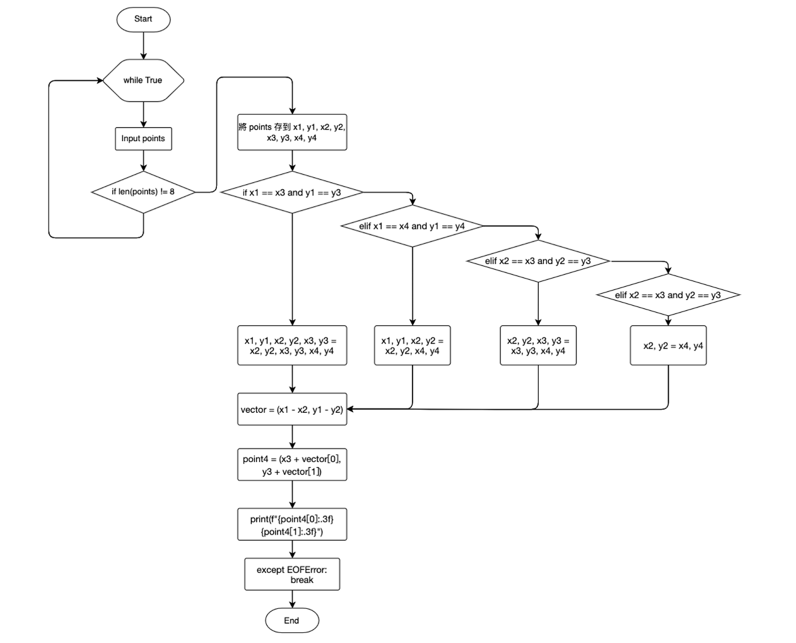

Yu-Sheng Tzou
10242 - Fourth Point !!
2023/10/21
題目敘述
：here解題想法：
- 題目給定平行四邊形的「兩個相鄰邊」的端點的 (x, y)座標，這四個端點中必有兩個座標是同一點。
- 決定三個相異的座標點後，即可決定第四點的座標。
流程圖：
程式碼：
# 鄒雨笙 UVa Online Judge 2023/10/21
# Problem 10242 - Fourth Point !!
while True:
try:
points = input().split()
if len(points) != 8:
continue
points = [float(x) for x in points]
x1, y1, x2, y2, x3, y3, x4, y4 = points
if x1 == x3 and y1 == y3:
x1, y1, x2, y2, x3, y3 = x2, y2, x3, y3, x4, y4
elif x1 == x4 and y1 == y4:
x1, y1, x2, y2 = x2, y2, x4, y4
elif x2 == x3 and y2 == y3:
x2, y2, x3, y3 = x3, y3, x4, y4
elif x2 == x4 and y2 == y4:
x2, y2 = x4, y4
vector = (x1 - x2, y1 - y2)
point4 = (x3 + vector[0], y3 + vector[1])
print(f"{point4[0]:.3f} {point4[1]:.3f}")
except EOFError:
break
except ValueError:
continue